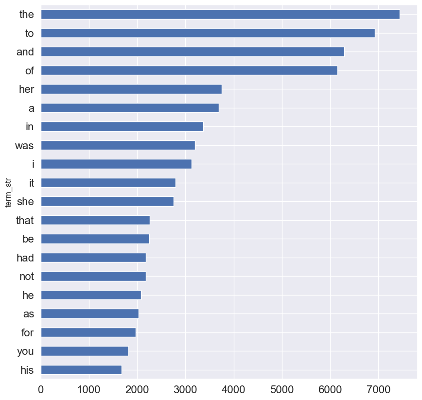

import pandas as pd
import numpy as np
import matplotlib.pyplot as plt
import seaborn as sns; sns.set()Inferring Language Models v1
Course: DS 5001
Module: 03 Lab
Topic: Inferring Language Models
Version: 1
Author: R.C. Alvarado
Date: 22 January 2022 (modified)Purpose:
We now create a series of simple n-gram langage models from a set of novels and evaluate them.
We don’t worry about missing words, smoothing, etc. This is just to demonstrate how we convert the counts from a token table into a language model.
Set Up
Import libraries
Configure
import configparserconfig = configparser.ConfigParser()
config.read("../env.ini")
data_dir = config['DEFAULT']['data_home']
output_dir = config['DEFAULT']['output_dir']Import and combine texts
OHCO = ['book_id', 'chap_num', 'para_num', 'sent_num', 'token_num']
text_file1 = f'{output_dir}/austen-persuasion.csv'
text_file2 = f'{output_dir}/austen-sense.csv'text1 = pd.read_csv(text_file1)
text2 = pd.read_csv(text_file2)text1.head(10)| chap_num | para_num | sent_num | token_num | token_str | term_str | |
|---|---|---|---|---|---|---|
| 0 | 1 | 0 | 0 | 0 | Sir | sir |
| 1 | 1 | 0 | 0 | 1 | Walter | walter |
| 2 | 1 | 0 | 0 | 2 | Elliot | elliot |
| 3 | 1 | 0 | 0 | 3 | of | of |
| 4 | 1 | 0 | 0 | 4 | Kellynch | kellynch |
| 5 | 1 | 0 | 0 | 5 | Hall | hall |
| 6 | 1 | 0 | 0 | 6 | in | in |
| 7 | 1 | 0 | 0 | 7 | Somersetshire | somersetshire |
| 8 | 1 | 0 | 0 | 8 | was | was |
| 9 | 1 | 0 | 0 | 9 | a | a |
text1['book_id'] = 1
text2['book_id'] = 2text1.head()| chap_num | para_num | sent_num | token_num | token_str | term_str | book_id | |
|---|---|---|---|---|---|---|---|
| 0 | 1 | 0 | 0 | 0 | Sir | sir | 1 |
| 1 | 1 | 0 | 0 | 1 | Walter | walter | 1 |
| 2 | 1 | 0 | 0 | 2 | Elliot | elliot | 1 |
| 3 | 1 | 0 | 0 | 3 | of | of | 1 |
| 4 | 1 | 0 | 0 | 4 | Kellynch | kellynch | 1 |
tokens = pd.concat([text1, text2]).dropna().set_index(OHCO)tokens.head()| token_str | term_str | |||||
|---|---|---|---|---|---|---|
| book_id | chap_num | para_num | sent_num | token_num | ||
| 1 | 1 | 0 | 0 | 0 | Sir | sir |
| 1 | Walter | walter | ||||
| 2 | Elliot | elliot | ||||
| 3 | of | of | ||||
| 4 | Kellynch | kellynch |
Extract a vocabulary
Nornalize tokens
We use a simple normalization scheme – remove all non-alphanumeric characters, including underscores.
tokens['term_str'] = tokens['token_str'].str.lower().str.replace(r'[\W_]', '', regex=True).dropna()tokens| token_str | term_str | |||||
|---|---|---|---|---|---|---|
| book_id | chap_num | para_num | sent_num | token_num | ||
| 1 | 1 | 0 | 0 | 0 | Sir | sir |
| 1 | Walter | walter | ||||
| 2 | Elliot | elliot | ||||
| 3 | of | of | ||||
| 4 | Kellynch | kellynch | ||||
| ... | ... | ... | ... | ... | ... | ... |
| 2 | 50 | 23 | 0 | 8 | and | and |
| 9 | Sensibility | sensibility | ||||
| 10 | by | by | ||||
| 11 | Jane | jane | ||||
| 12 | Austen | austen |
204801 rows × 2 columns
Count tokens
We create a dataframe of unique tokens, i.e. token types, which we will call “terms”. Our first feature will be their counts.
vocab = tokens['term_str'].value_counts()\
.to_frame('n')\
.sort_index()vocab.sample(10)| n | |
|---|---|
| term_str | |
| vine | 1 |
| discriminating | 1 |
| hinder | 1 |
| therefore | 121 |
| circuit | 1 |
| worldly | 7 |
| noticing | 2 |
| accommodations | 7 |
| foibles | 1 |
| privileged | 1 |
Quick look at most frequent terms
vocab.n.nlargest(20).sort_values().plot.barh(figsize=(10,10), fontsize=16);
Simple Unigram Model
Extract probability features (\(p\), \(i\), and \(h\))
We use \(i\) to stand for the inverse log probability of \(x\), following our intuition that it represents information as “surprisal”.
$ i(x) = log_2() $
\(i\) is the inverse of log probability, second term in the entropy formula $ H(x) = _x p(x) log_2() $
n_tokens = vocab.n.sum()
n_terms = vocab.n.count() # same as vocab.shape[0]
vocab['p'] = vocab['n'] / n_tokens
vocab['p2'] = vocab['n'] / n_terms # Some sources say to do this, but it makes no sense
vocab['i'] = np.log2(1/vocab['p'])
vocab['h'] = vocab['p'] * vocab['i']vocab.sort_values('p', ascending=False)| n | p | p2 | i | h | |
|---|---|---|---|---|---|
| term_str | |||||
| the | 7435 | 0.036304 | 0.902525 | 4.783746 | 0.173667 |
| to | 6923 | 0.033804 | 0.840374 | 4.886682 | 0.165187 |
| and | 6290 | 0.030713 | 0.763535 | 5.025019 | 0.154332 |
| of | 6146 | 0.030010 | 0.746055 | 5.058431 | 0.151802 |
| her | 3747 | 0.018296 | 0.454843 | 5.772343 | 0.105610 |
| ... | ... | ... | ... | ... | ... |
| reservedness | 1 | 0.000005 | 0.000121 | 17.643863 | 0.000086 |
| reserving | 1 | 0.000005 | 0.000121 | 17.643863 | 0.000086 |
| enthusiast | 1 | 0.000005 | 0.000121 | 17.643863 | 0.000086 |
| nipped | 1 | 0.000005 | 0.000121 | 17.643863 | 0.000086 |
| divisions | 1 | 0.000005 | 0.000121 | 17.643863 | 0.000086 |
8238 rows × 5 columns
Compute Entropy of the model
H = vocab.h.sum()H9.149850013062554Compute Redundancy
Hmax = np.log2(n_terms)
R = 1 - (H/Hmax)int(round(R, 2) * 100)30So, the redundancy of Austen’s English from these two novels \(R_{austen}\) is about \(30\%\). Shannon estimated the redundancy of English \(R_{english}\) to be \(54\%\) (see Shannon 1953 in the Readings).
Predict Senteces
vocab| n | p | p2 | i | h | |
|---|---|---|---|---|---|
| term_str | |||||
| 1 | 3 | 0.000015 | 0.000364 | 16.058901 | 0.000235 |
| 15 | 1 | 0.000005 | 0.000121 | 17.643863 | 0.000086 |
| 16 | 1 | 0.000005 | 0.000121 | 17.643863 | 0.000086 |
| 1760 | 1 | 0.000005 | 0.000121 | 17.643863 | 0.000086 |
| 1784 | 1 | 0.000005 | 0.000121 | 17.643863 | 0.000086 |
| ... | ... | ... | ... | ... | ... |
| youthful | 3 | 0.000015 | 0.000364 | 16.058901 | 0.000235 |
| z | 1 | 0.000005 | 0.000121 | 17.643863 | 0.000086 |
| zeal | 7 | 0.000034 | 0.000850 | 14.836508 | 0.000507 |
| zealous | 4 | 0.000020 | 0.000486 | 15.643863 | 0.000306 |
| zealously | 2 | 0.000010 | 0.000243 | 16.643863 | 0.000163 |
8238 rows × 5 columns
import re
def predict_sentence(sent_str, smooth = .5):
# Parse sentence into tokens and normalize string
S = sent_str.lower().split()
S = [re.sub(r'[\W_]+', '', s) for s in S]
N = len(S)
# Handle out of vocabulary words
OOV = [(w, smooth) for w in list(set(S) - set(vocab.index))]
if len(OOV) > 0:
new_row = pd.DataFrame(OOV, columns=['term_str','n']).set_index('term_str')
V = pd.concat([vocab[['n']], new_row], axis=0)
# V = vocab[['n']].append(pd.DataFrame(OOV, columns=['term_str','n']).set_index('term_str')).copy()
V['p'] = V.n / V.n.sum()
else:
V = vocab[['n','p']].copy()
V['i'] = np.log2(1/V.p)
# Create dataframe of tokens from sentence
tokens = pd.DataFrame(S, columns=['term_str']).set_index('term_str')
# Link the tokens with model vocabulary
tokens = tokens.merge(V, on='term_str')
# Compute Perplexity
pp = 2**(tokens.i.sum()/N)
return (sent_str, pp)test_sentences = """
I love you
I love cars
I want to
Anne said to
said to her
said to him
she read the
""".split('\n')[1:-1]
pdata = []
for S in test_sentences:
pdata.append(predict_sentence(S))pd.DataFrame(pdata, columns=['sent_str', 'pp']).sort_values('pp').style.background_gradient()| sent_str | pp | |
|---|---|---|
| 4 | said to her | 83.441310 |
| 5 | said to him | 125.207928 |
| 3 | Anne said to | 162.962001 |
| 2 | I want to | 175.011992 |
| 6 | she read the | 228.717029 |
| 0 | I love you | 233.229387 |
| 1 | I love cars | 3587.059356 |
N-Gram models
This function generates models up to the length specified.
def get_ngrams(n=2):
"""Generate n-gram models for each value of n"""
global tokens, OHCO
# Create list to store copies of tokens table
X = []
# Convert the index to cols in order to change the value of token_num
X.append(tokens['term_str'].reset_index())
# Create copies of token table for each level of ngram, offset by 1, and
# merge with previous
for i in range(1, n):
# Append a new copy of the token list
X.append(X[0].copy())
# Offset the token num by 1 each time
X[i]['token_num'] = X[i]['token_num'] + i
# Merge the new dataframe with the previous, using the OHCO as key,
# to preserve structure, including sentence boundaries
X[i] = X[i].merge(X[i-1], on=OHCO, how='left',
sort=True,
suffixes=[f"{i}", f"{i+1}"]).fillna('<s>')
print(i)
print(X[i].head())
print('-' * 40)
# Compress tables to unique ngrams with counts;
for i in range(0, n):
X[i] = X[i].drop(OHCO, axis=1)
cols = X[i].columns.tolist()
X[i] = X[i].value_counts().to_frame('n')
X[i].index.names = [f'w{j}' for j in range(i+1)]
X[i] = X[i].sort_index()
# Return just the ngram tables
return XGenerate three models
Unigram, bigram, and trigram
m1, m2, m3 = get_ngrams(n=3)1
book_id chap_num para_num sent_num token_num term_str1 term_str2
0 1 1 0 0 1 sir walter
1 1 1 0 0 2 walter elliot
2 1 1 0 0 3 elliot of
3 1 1 0 0 4 of kellynch
4 1 1 0 0 5 kellynch hall
----------------------------------------
2
book_id chap_num para_num sent_num token_num term_str term_str1 \
0 1 1 0 0 2 sir walter
1 1 1 0 0 3 walter elliot
2 1 1 0 0 4 elliot of
3 1 1 0 0 5 of kellynch
4 1 1 0 0 6 kellynch hall
term_str2
0 elliot
1 of
2 kellynch
3 hall
4 in
----------------------------------------m3| n | |||
|---|---|---|---|
| w0 | w1 | w2 | |
| 1 | 1760 | married | 1 |
| 1785 | <s> | 1 | |
| ends | <s> | 1 | |
| 15 | 1784 | elizabeth | 1 |
| 16 | 1810 | charles | 1 |
| ... | ... | ... | ... |
| zealous | attention | as | 1 |
| officer | too | 1 | |
| on | the | 1 | |
| zealously | active | as | 1 |
| discharging | all | 1 |
154242 rows × 1 columns
m2.sort_values('n', ascending=False).head(10)| n | ||
|---|---|---|
| w0 | w1 | |
| of | the | 857 |
| to | be | 814 |
| in | the | 682 |
| mrs | <s> | 530 |
| it | was | 498 |
| to | the | 415 |
| she | had | 411 |
| of | her | 403 |
| had | been | 379 |
| she | was | 373 |
m3.loc[('captain','wentworth')].sort_values('n', ascending=False)| n | |
|---|---|
| w2 | |
| <s> | 26 |
| s | 26 |
| was | 15 |
| in | 8 |
| had | 7 |
| ... | ... |
| looked | 1 |
| long | 1 |
| left | 1 |
| jealous | 1 |
| now | 1 |
90 rows × 1 columns
m3.loc[('anne','elliot')].sort_values('n', ascending=False)| n | |
|---|---|
| w2 | |
| <s> | 6 |
| and | 3 |
| as | 2 |
| with | 2 |
| again | 1 |
| deprived | 1 |
| had | 1 |
| have | 1 |
| should | 1 |
| so | 1 |
| to | 1 |
| was | 1 |
| were | 1 |
| you | 1 |
Compute joint probabilities
m1['p'] = m1['n'] / m1['n'].sum()
m2['p'] = m2['n'] / m2['n'].sum()
m3['p'] = m3['n'] / m3['n'].sum()m1.sort_values('p', ascending=False).head()| n | p | |
|---|---|---|
| w0 | ||
| the | 7435 | 0.036304 |
| to | 6923 | 0.033804 |
| and | 6290 | 0.030713 |
| of | 6146 | 0.030010 |
| her | 3747 | 0.018296 |
m2.sort_values('p', ascending=False).head()| n | p | ||
|---|---|---|---|
| w0 | w1 | ||
| of | the | 857 | 0.004185 |
| to | be | 814 | 0.003975 |
| in | the | 682 | 0.003330 |
| mrs | <s> | 530 | 0.002588 |
| it | was | 498 | 0.002432 |
m3.sort_values('p', ascending=False).head(15)| n | p | |||
|---|---|---|---|---|
| w0 | w1 | w2 | ||
| mrs | <s> | <s> | 530 | 0.002588 |
| it | <s> | <s> | 369 | 0.001802 |
| her | <s> | <s> | 241 | 0.001177 |
| him | <s> | <s> | 229 | 0.001118 |
| mr | <s> | <s> | 179 | 0.000874 |
| you | <s> | <s> | 172 | 0.000840 |
| them | <s> | <s> | 163 | 0.000796 |
| me | <s> | <s> | 162 | 0.000791 |
| elinor | <s> | <s> | 119 | 0.000581 |
| i | am | sure | 107 | 0.000522 |
| she | could | not | 93 | 0.000454 |
| marianne | <s> | <s> | 90 | 0.000439 |
| again | <s> | <s> | 85 | 0.000415 |
| as | soon | as | 82 | 0.000400 |
| all | <s> | <s> | 82 | 0.000400 |
Compute conditional probabilities
\(p(w_1|w_0) = p(w_0, w_1) / p(w_0)\)
\(p(w_2|w_0,w_1) = p(w_0, w_1, w_2) / p(w_0, w_1)\)
# m2['cp'] = (m2.n / m1.n).sort_values().to_frame('p').sort_index()m2['m1n'] = m1.n
m2['cp'] = m2.n / m2.m1nm2| n | p | m1n | cp | ||
|---|---|---|---|---|---|
| w0 | w1 | ||||
| 1 | 1760 | 1 | 0.000005 | 3 | 0.333333 |
| 1785 | 1 | 0.000005 | 3 | 0.333333 | |
| ends | 1 | 0.000005 | 3 | 0.333333 | |
| 15 | 1784 | 1 | 0.000005 | 1 | 1.000000 |
| 16 | 1810 | 1 | 0.000005 | 1 | 1.000000 |
| ... | ... | ... | ... | ... | ... |
| zealous | attention | 1 | 0.000005 | 4 | 0.250000 |
| officer | 1 | 0.000005 | 4 | 0.250000 | |
| on | 1 | 0.000005 | 4 | 0.250000 | |
| zealously | active | 1 | 0.000005 | 2 | 0.500000 |
| discharging | 1 | 0.000005 | 2 | 0.500000 |
77458 rows × 4 columns
# m3['cp'] = (m3.n / m2.n).sort_values().to_frame('p').sort_index()m3['m2n'] = m2.n
m3['cp'] = m3.n / m3.m2nm3.sort_values('cp', ascending=False)| n | p | m2n | cp | |||
|---|---|---|---|---|---|---|
| w0 | w1 | w2 | ||||
| 1 | 1760 | married | 1 | 0.000005 | 1 | 1.000000 |
| met | mrs | <s> | 2 | 0.000010 | 2 | 1.000000 |
| middletons | dining | at | 1 | 0.000005 | 1 | 1.000000 |
| as | much | 1 | 0.000005 | 1 | 1.000000 | |
| arrived | so | 1 | 0.000005 | 1 | 1.000000 | |
| ... | ... | ... | ... | ... | ... | ... |
| of | the | household | 1 | 0.000005 | 857 | 0.001167 |
| hours | 1 | 0.000005 | 857 | 0.001167 | ||
| higher | 1 | 0.000005 | 857 | 0.001167 | ||
| heavy | 1 | 0.000005 | 857 | 0.001167 | ||
| agitation | 1 | 0.000005 | 857 | 0.001167 |
154242 rows × 4 columns
m2.cp.unstack(fill_value=0)| w1 | 1 | 15 | 16 | 1760 | 1784 | 1785 | 1787 | 1789 | 1791 | 1800 | ... | your | yours | yourself | yourselves | youth | youthful | z | zeal | zealous | zealously |
|---|---|---|---|---|---|---|---|---|---|---|---|---|---|---|---|---|---|---|---|---|---|
| w0 | |||||||||||||||||||||
| 1 | 0.0 | 0.0 | 0.0 | 0.333333 | 0.0 | 0.333333 | 0.0 | 0.0 | 0.0 | 0.0 | ... | 0.0 | 0.0 | 0.0 | 0.0 | 0.0 | 0.0 | 0.0 | 0.0 | 0.0 | 0.0 |
| 15 | 0.0 | 0.0 | 0.0 | 0.000000 | 1.0 | 0.000000 | 0.0 | 0.0 | 0.0 | 0.0 | ... | 0.0 | 0.0 | 0.0 | 0.0 | 0.0 | 0.0 | 0.0 | 0.0 | 0.0 | 0.0 |
| 16 | 0.0 | 0.0 | 0.0 | 0.000000 | 0.0 | 0.000000 | 0.0 | 0.0 | 0.0 | 0.0 | ... | 0.0 | 0.0 | 0.0 | 0.0 | 0.0 | 0.0 | 0.0 | 0.0 | 0.0 | 0.0 |
| 1760 | 0.0 | 0.0 | 0.0 | 0.000000 | 0.0 | 0.000000 | 0.0 | 0.0 | 0.0 | 0.0 | ... | 0.0 | 0.0 | 0.0 | 0.0 | 0.0 | 0.0 | 0.0 | 0.0 | 0.0 | 0.0 |
| 1784 | 0.0 | 0.0 | 0.0 | 0.000000 | 0.0 | 0.000000 | 0.0 | 0.0 | 0.0 | 0.0 | ... | 0.0 | 0.0 | 0.0 | 0.0 | 0.0 | 0.0 | 0.0 | 0.0 | 0.0 | 0.0 |
| ... | ... | ... | ... | ... | ... | ... | ... | ... | ... | ... | ... | ... | ... | ... | ... | ... | ... | ... | ... | ... | ... |
| youthful | 0.0 | 0.0 | 0.0 | 0.000000 | 0.0 | 0.000000 | 0.0 | 0.0 | 0.0 | 0.0 | ... | 0.0 | 0.0 | 0.0 | 0.0 | 0.0 | 0.0 | 0.0 | 0.0 | 0.0 | 0.0 |
| z | 0.0 | 0.0 | 0.0 | 0.000000 | 0.0 | 0.000000 | 0.0 | 0.0 | 0.0 | 0.0 | ... | 0.0 | 0.0 | 0.0 | 0.0 | 0.0 | 0.0 | 0.0 | 0.0 | 0.0 | 0.0 |
| zeal | 0.0 | 0.0 | 0.0 | 0.000000 | 0.0 | 0.000000 | 0.0 | 0.0 | 0.0 | 0.0 | ... | 0.0 | 0.0 | 0.0 | 0.0 | 0.0 | 0.0 | 0.0 | 0.0 | 0.0 | 0.0 |
| zealous | 0.0 | 0.0 | 0.0 | 0.000000 | 0.0 | 0.000000 | 0.0 | 0.0 | 0.0 | 0.0 | ... | 0.0 | 0.0 | 0.0 | 0.0 | 0.0 | 0.0 | 0.0 | 0.0 | 0.0 | 0.0 |
| zealously | 0.0 | 0.0 | 0.0 | 0.000000 | 0.0 | 0.000000 | 0.0 | 0.0 | 0.0 | 0.0 | ... | 0.0 | 0.0 | 0.0 | 0.0 | 0.0 | 0.0 | 0.0 | 0.0 | 0.0 | 0.0 |
8238 rows × 8194 columns
m3.cp.unstack(fill_value=0)| w2 | 1 | 15 | 16 | 1760 | 1784 | 1785 | 1787 | 1789 | 1791 | 1800 | ... | your | yours | yourself | yourselves | youth | youthful | z | zeal | zealous | zealously | |
|---|---|---|---|---|---|---|---|---|---|---|---|---|---|---|---|---|---|---|---|---|---|---|
| w0 | w1 | |||||||||||||||||||||
| 1 | 1760 | 0.0 | 0.0 | 0.0 | 0.0 | 0.0 | 0.0 | 0.0 | 0.0 | 0.0 | 0.0 | ... | 0.0 | 0.0 | 0.0 | 0.0 | 0.0 | 0.0 | 0.0 | 0.0 | 0.0 | 0.0 |
| 1785 | 0.0 | 0.0 | 0.0 | 0.0 | 0.0 | 0.0 | 0.0 | 0.0 | 0.0 | 0.0 | ... | 0.0 | 0.0 | 0.0 | 0.0 | 0.0 | 0.0 | 0.0 | 0.0 | 0.0 | 0.0 | |
| ends | 0.0 | 0.0 | 0.0 | 0.0 | 0.0 | 0.0 | 0.0 | 0.0 | 0.0 | 0.0 | ... | 0.0 | 0.0 | 0.0 | 0.0 | 0.0 | 0.0 | 0.0 | 0.0 | 0.0 | 0.0 | |
| 15 | 1784 | 0.0 | 0.0 | 0.0 | 0.0 | 0.0 | 0.0 | 0.0 | 0.0 | 0.0 | 0.0 | ... | 0.0 | 0.0 | 0.0 | 0.0 | 0.0 | 0.0 | 0.0 | 0.0 | 0.0 | 0.0 |
| 16 | 1810 | 0.0 | 0.0 | 0.0 | 0.0 | 0.0 | 0.0 | 0.0 | 0.0 | 0.0 | 0.0 | ... | 0.0 | 0.0 | 0.0 | 0.0 | 0.0 | 0.0 | 0.0 | 0.0 | 0.0 | 0.0 |
| ... | ... | ... | ... | ... | ... | ... | ... | ... | ... | ... | ... | ... | ... | ... | ... | ... | ... | ... | ... | ... | ... | ... |
| zealous | attention | 0.0 | 0.0 | 0.0 | 0.0 | 0.0 | 0.0 | 0.0 | 0.0 | 0.0 | 0.0 | ... | 0.0 | 0.0 | 0.0 | 0.0 | 0.0 | 0.0 | 0.0 | 0.0 | 0.0 | 0.0 |
| officer | 0.0 | 0.0 | 0.0 | 0.0 | 0.0 | 0.0 | 0.0 | 0.0 | 0.0 | 0.0 | ... | 0.0 | 0.0 | 0.0 | 0.0 | 0.0 | 0.0 | 0.0 | 0.0 | 0.0 | 0.0 | |
| on | 0.0 | 0.0 | 0.0 | 0.0 | 0.0 | 0.0 | 0.0 | 0.0 | 0.0 | 0.0 | ... | 0.0 | 0.0 | 0.0 | 0.0 | 0.0 | 0.0 | 0.0 | 0.0 | 0.0 | 0.0 | |
| zealously | active | 0.0 | 0.0 | 0.0 | 0.0 | 0.0 | 0.0 | 0.0 | 0.0 | 0.0 | 0.0 | ... | 0.0 | 0.0 | 0.0 | 0.0 | 0.0 | 0.0 | 0.0 | 0.0 | 0.0 | 0.0 |
| discharging | 0.0 | 0.0 | 0.0 | 0.0 | 0.0 | 0.0 | 0.0 | 0.0 | 0.0 | 0.0 | ... | 0.0 | 0.0 | 0.0 | 0.0 | 0.0 | 0.0 | 0.0 | 0.0 | 0.0 | 0.0 |
77458 rows × 8079 columns
Predict Sentences
def predict_sentence2(sent_str, M):
# Model order
n = len(M.index.names)
# Parse sentence into tokens and normalize string
S = sent_str.lower().split()
S = [re.sub(r'[\W_]+', '', s) for s in S]
S = S + ['<s>' for i in range(n-1)]
N = len(S)
# Generate ngram keys
ngrams = []
offset = n - 1
for i in range(offset, len(S)):
ngram = []
w = S[i]
for j in range(n):
ngram.append(S[i-j])
ngram.reverse()
ngrams.append(ngram)
# Get smoothing -- HACK
smooth = M.p.min()
# Compute the probability of the sentence
log_prob = 0
for ngram in ngrams:
try:
p_ngram = M.loc[tuple(ngram)].p
except KeyError:
p_ngram = smooth
log_prob += np.log(p_ngram)
p = np.exp(log_prob)
pp = round(p**(-1/N))
return([n, sent_str, p, pp])test_sentences = """
I love you
I love cars
I want to
Anne said to
said to her
said to him
she read the
""".split('\n')[1:-1]
pdata = []
for S in test_sentences:
pdata.append(predict_sentence2(S, m1))
pdata.append(predict_sentence2(S, m2))
pdata.append(predict_sentence2(S, m3))
R1 = pd.DataFrame(pdata, columns=['model','sent_str', 'p', 'pp']).set_index(['sent_str','model'])cols = [1,2,3]
pd.concat([R1.p.unstack().rename(columns={col:f"p{col}" for col in cols}),
R1.pp.unstack().rename(columns={col:f"pp{col}" for col in cols} )], axis=1).style.background_gradient()| model | p1 | p2 | p3 | pp1 | pp2 | pp3 |
|---|---|---|---|---|---|---|
| sent_str | ||||||
| Anne said to | 0.000000 | 0.000000 | 0.000000 | 163 | 2142 | 814 |
| I love cars | 0.000000 | 0.000000 | 0.000000 | 2847 | 5724 | 1537 |
| I love you | 0.000000 | 0.000000 | 0.000000 | 233 | 1201 | 549 |
| I want to | 0.000000 | 0.000000 | 0.000000 | 175 | 1776 | 814 |
| said to her | 0.000002 | 0.000000 | 0.000000 | 83 | 284 | 245 |
| said to him | 0.000001 | 0.000000 | 0.000000 | 125 | 381 | 229 |
| she read the | 0.000000 | 0.000000 | 0.000000 | 229 | 6438 | 1537 |
Explore Pairs
def explore_pairs(list1, list2):
global m2
test_pairs = []
for pair in zip(list1, list2):
try:
m2.loc[pair]
test_pairs.append(pair)
except:
pass
return m2.loc[test_pairs].cp.unstack(fill_value=0).style.background_gradient()explore_pairs(['he','she','it','anne','wentworth'], ['is','had','was','did','felt','thought','looked','said','saw'])| w1 | is | had | was | did |
|---|---|---|---|---|
| w0 | ||||
| he | 0.057803 | 0.000000 | 0.000000 | 0.000000 |
| she | 0.000000 | 0.148967 | 0.000000 | 0.000000 |
| it | 0.000000 | 0.000000 | 0.178175 | 0.000000 |
| anne | 0.000000 | 0.000000 | 0.000000 | 0.015905 |
explore_pairs(['he', 'she', 'it'], ['said','felt'])| w1 | said | felt |
|---|---|---|
| w0 | ||
| he | 0.016378 | 0.000000 |
| she | 0.000000 | 0.018123 |
Generate Text
We use stupid back-off to account for missing ngrams.
def generate_text(start_word='she', n=250):
words = [start_word]
for i in range(n):
if len(words) == 1:
w = m2.loc[start_word].p
next_word = m2.loc[start_word].sample(weights=w).index.values[0]
elif len(words) > 1:
bg = tuple(words[-2:])
try:
w = m3.loc[bg].p
next_word = m3.loc[bg].sample(weights=w).index.values[0]
except KeyError:
ug = bg[1]
if ug == '<s>':
next_word = m1.sample(weights=m1.p).index[0]
else:
w = m2.loc[ug].p
next_word = m2.loc[ug].sample(weights=w).index.values[0]
# Some words are returned as single item tuples
if isinstance(next_word, tuple):
next_word = next_word[0]
words.append(next_word)
text = ' '.join(words)
text = text.replace(' <s> <s>', '.') + '.'
text = text.upper() # To give that telegraph message look :-)
print(text)generate_text('the')THE MORE I SAW YOU WEAR A RING BEFORE EDWARD. APPARENTLY VERY LITTLE BESIDES SENDING AWAY SOME OF THESE SUPERIOR BLESSINGS COULD BE MORE LOST TO ME AND IN ENDEAVOURING TO APPEAR IN THEIR PARSONAGE BY MICHAELMAS AND SHE HAS MADE EVERYTHING BELONGING TO A BELIEF OF BEING SEEN WITH HIM. HER NERVES SUFFICIENTLY TO FEEL IT A MORE WILLING MIND IN HER NATURAL TONE OF CORDIALITY I BEG YOUR PARDON MR. TWO THOUSAND POUNDS WHICH HAD DESERTED AND MELANCHOLY LOOKING ROOMS AND A HALF IS A GOOD WALKER OH YES. A MIXTURE OF THOSE MOST CONCERNED. ELINOR HAD MET. SEEMED NO OTHERWISE INTELLIGIBLE. SISTER OR WHAT DIABOLICAL MOTIVE YOU MAY AS WELL SATISFIED WITH HER LAUGHED WITH HER STATE OF SPIRITS. BE DONE IN RAPID MOMENTS CAPTAIN BENWICK WHICH HE COMMUNICATED TO HIS PRESENT CURACY AND OBTAINING THAT OF MY FAMILY. KNOW HOW TO HOLD THE BLESSINGS OF HEALTH AND LOOKS OR LADY MIDDLETON WAS NOT LIKELY TO BE DONE. AN ACCOUNT OF HER HEART PROPHESIED SOME MISCHANCE TO DAMP THE PERFECTION OF HER MOTHER. LIBERTY WITH YOU. AND THOSE WHO HAVE NOT BEEN VERY AGREEABLE TO THEIR FORMER GOOD UNDERSTANDING WAS COMPLETELY A GENTLEMAN OF CONSEQUENCE. BY. PRODUCED A VERY PLEASANT ADDITION TO THESE. OF THE MIDDLETONS AND PALMERS HOW AM I BE OF THE HOUSE FOR THEIR MEETING.generate_text('she')SHE I MIGHT SEE IT TO EDWARD SHE BELIEVED HER CAPABLE OF THE GENTLEMAN. THE NUMBER OF HER SICK CHILD IS ALWAYS SUPPOSING THAT PERHAPS. SHE ADDED IN A MANNER FORCED ON ME BY THE BYE HAD A VERY DIFFERENT EFFECT SAW NOTHING TO BE HOWEVER DISAGREEABLE YET TOO RAPID. HILL WHICH PARTED UPPERCROSS AND IN THE FAMILY AT THE FORM OF IT FOR IT HAS CARRIED AWAY FROM HIS DAUGHTER S WISHES COULD BE CANVASSED ONLY IN GENERAL SO EARNESTLY GRATEFUL SO FULL OF AFFECTION AND INFLUENCE. DEAR COUSIN YOU ARE CERTAIN OF MEETING THEM AND NOBODY BUT LUCY S BEAU IS QUITE UNDERSTOOD I GIVE THEM ALL WITH THE SIZE AND MENTAL ALACRITY DID NOT MAKE MORE THAN A THICK SCREEN OF THEM ALL INTO THE SICK ROOM THAN MARIANNE RINGING THE BELL. FULL OF MEANING TO BE CONTRADICTED. DESIRE YOU WILL SOON BE BACK AGAIN DIRECTLY. WILL BE THE MEANING OF IT. AS THIS CANNOT BE FORCED INTO PRUDENCE IN HER NOTIONS OF A DIFFERENT CAUSE NO LESS CONTENTED WITH THE HARVILLES WHILE THE EYES OF SENSIBLE PEOPLE BY ACTING LIKE A MAN WHO FOR MORE THAN EQUAL ANY OF THEM ALL THAT REMAINS. TELL ME OF IT AT ALL WONDER AT HERSELF FOR BEING SO GENUINELY AND UNAFFECTEDLY ILL NATURED OR ILL BRED AS HE WAS SILENT. SWEET THINGS THAT THEY ONLY HAVE A LITTLE COLD ALREADY.Save
path_prefix = f"{output_dir}/austen-combo"
vocab.to_csv(f"{path_prefix}-VOCAB-v1.csv", index=True)
tokens.to_csv(f"{path_prefix}-TOKENS-v1.csv", index=True)
m1.to_csv(f"{path_prefix}-M1-v1.csv", index=True)
m2.to_csv(f"{path_prefix}-M2-v1.csv", index=True)
m3.to_csv(f"{path_prefix}-M3-v1.csv", index=True)